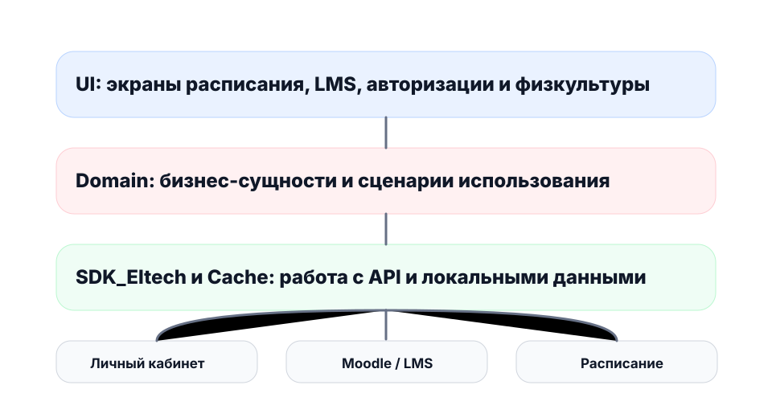

О проекте
Eltech
Eltech - мобильное приложение для студентов и преподавателей Московского Политеха. Проект помогает перенести ключевые университетские сервисы в удобный мобильный формат.
Главная идея проекта - дать пользователю быстрый доступ к расписанию, LMS/Moodle, личному кабинету и связанным учебным данным без постоянной работы через браузер.
Цель
Создать кроссплатформенное мобильное приложение для Android и iOS на базе Kotlin Multiplatform.
Задачи
Что реализует команда
Перенос функций личного кабинета
Разработка SDK_Eltech
Интеграция с LMS/Moodle
Экран расписания
Кэширование данных
Единый визуальный стиль
Архитектура
Технологическая схема
